The data used in the visualization is generated inside a jupyter Notebook: dataset_generation.ipynb. We used the python library sklearn to train the Machine Learning Network (MLN).
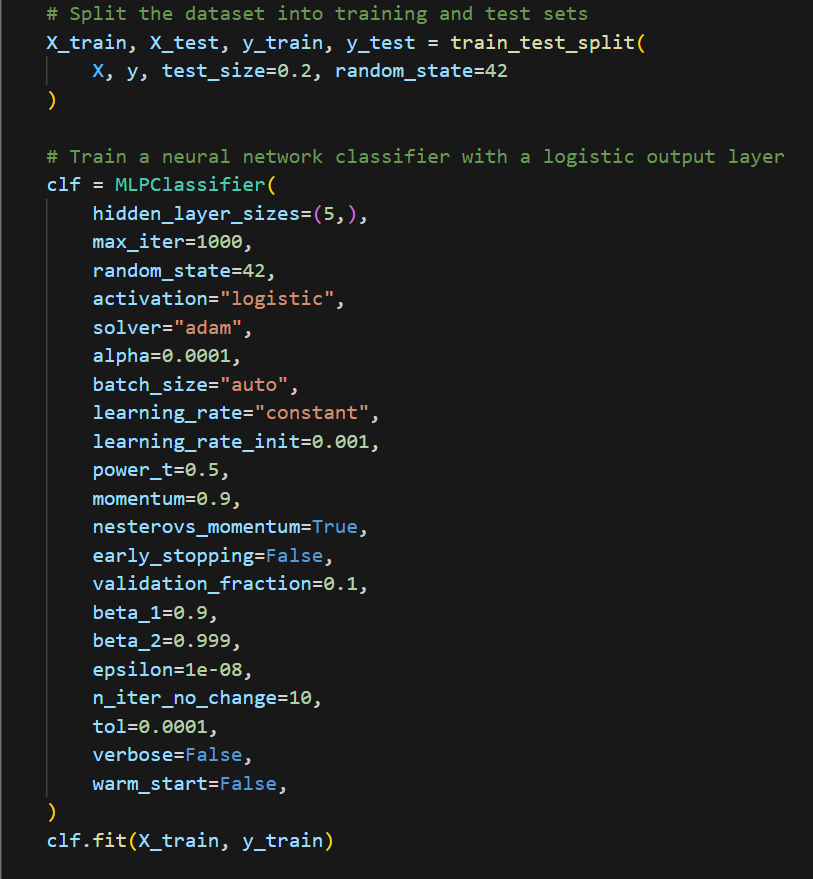We split the data into training and test set and trained a simple Neural Network.
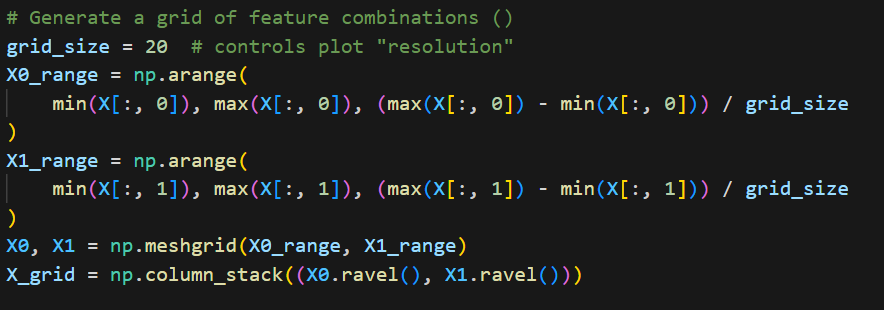Here we generate our grid of feature combinations. We generate a range of feature values and combine them using np.meshgrid. We stack the resulting grid so it creates a 2D array where each row represents a point in the grid, and the columns represent the values of the two features.
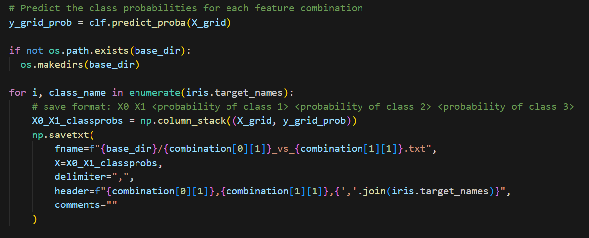We use this grid to predict a probability vector for each entry. This probability vector will later be used for our weighting during the Kernel Density Estimation. At last we create a header while writing the data into a file.
For simplicity, this implementation is contained entirely inside one HTML-file, with inline JS: src/index.html. This is also possible because D3 can be imported from a remote URL with no real performance loss for our use-case. This page documents the different procedures inside the HTML-file that are used to create the visualization.
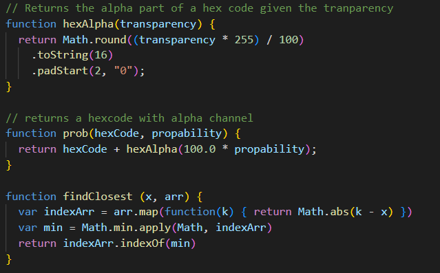In addition to the "main" render_graph() function, there are various support/helper functions used to compute various operations. getProbsFromMousePos() will be covered below, the rest can be seen in the image above.
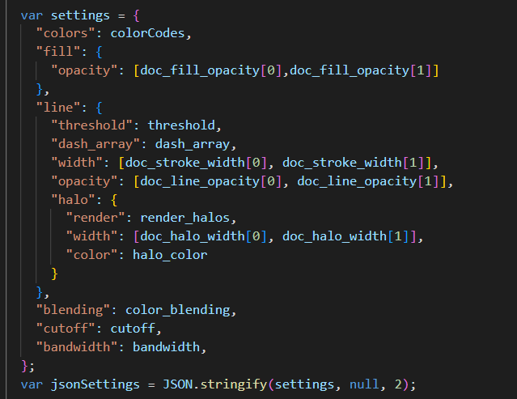The most important function is render_graph(), where a lot of things happen: first, the current options ("settings") are read from the corresponding HTML elements. In addition, the dictionary for the JSON DSL is created here.
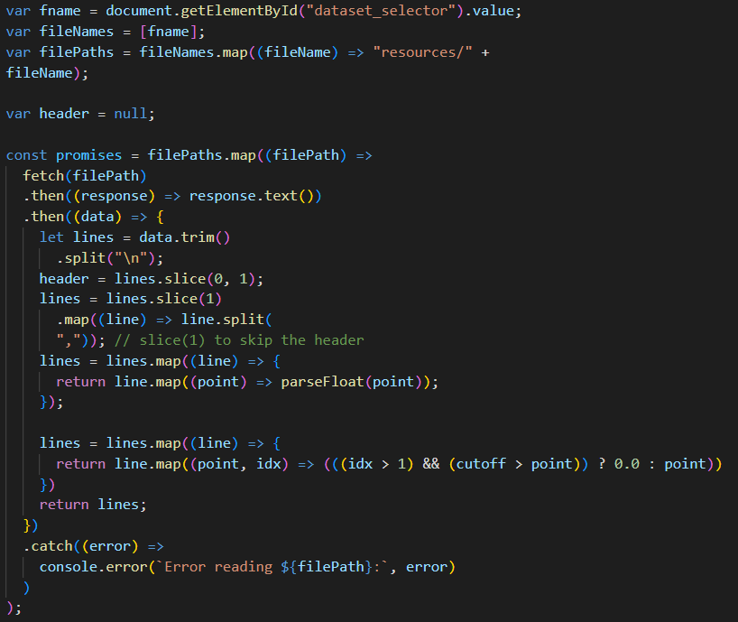Then, the data from the selected file is loaded and parsed, and we ensure the format is correct.
From there...
For each of these steps, the respective areas are marked with comment blocks in the source HTML file.
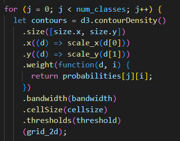After the canvas is set up, the contour edges are computed and later added to the canvas. This (and the following computations) happens once per class, as they all need separate contours to be computed. This function d3.contourDensity() takes the 2D grid as input to first filter the data with a Kernel Density Estimation and then generates the contours. We provide a weighting function so that the resulting scalar field is weighted according to the probability vector of the respective class. We also give the size of the plot, the width of the kernel (bandwidth), the size of the cell during marching squares (cellsize) and the thresholds for the contour generation (threshold).
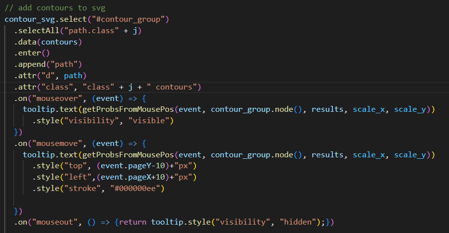The path elements are then appended to their respective svg elements. If enabled, halos are added in the same manner here. In addition, we add mouseover event handlers here that enable the tooltip functionality when hovering over the plot.
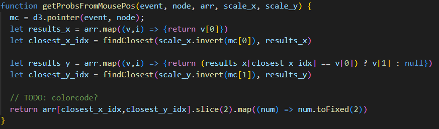To get the correct probability data for any given grid position, we need to use the previously computed scale to map back from pixel coordinates to the "original" feature space. We also need to use a "custom" closest-element-in-array function to choose the best approximate probability entry for the hovered position from the original data array.
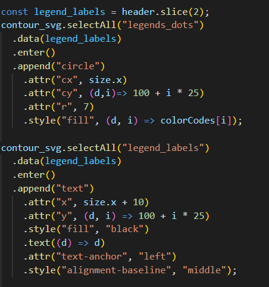The legend is also added to the plot, for all the classes in one step.
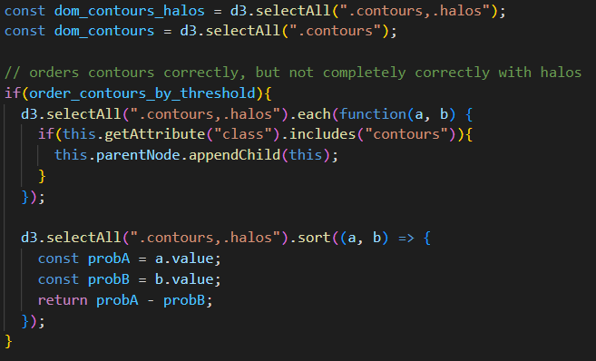Countours are then sorted according to their significance ("weight"/value).
The rest of the render_graph() function configures the plot according to some of the options.
The HTML elements will not be covered here, as they are rather self-explanatory/self-documenting and are best referenced from the source HTML file.